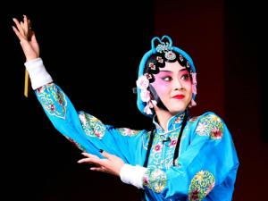

川剧现状
川剧具有巴蜀文化、艺术、历史、民俗等方面的研究和认知价值，在中国戏曲史及巴蜀文化发展史上具有十分独特的地位。近年来，川剧同其他各种地方戏曲一样出现了生存危机，观众减少，演出市场萎缩，经费不足，传承发展举步维艰，抢救、保护川剧的任务正严肃地摆在人们面前。
 国家非常重视非物质文化遗产的保护，2006年5月20日，经国务院批准列入第一批国家级非物质文化遗产名录。2007年6月8日，四川省川剧学校获得国家文化部颁布的首届文化遗产日奖。
锦江剧场(时间：每晚8点左右)，地址:华兴正街54号川剧艺术中心锦江剧场(成都市华兴街54号)。成都川剧艺术中心建成于2001年。中心包括悦来茶园、川剧艺术博物馆和一个大型现代剧场《芙蓉国粹》节目内容：经典的川剧绝活，变脸、吐火、滚灯、手影戏等。
2018年11月28日，教育部办公厅公布重庆大学、电子科技大学为川剧中华优秀传统文化传承基地。